FV直下：開始ボタンを外し、診断導入とQ1を見せる
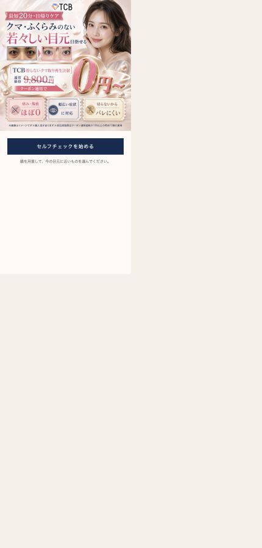
現行：FVの下に「セルフチェックを始める」ボタンがあり、押すまで質問内容と回答選択肢が見えない。
→
 元記事：診断の説明、その直下に年代質問と選択肢が見える。押した後に何が始まるかを推測させない。
元記事：診断の説明、その直下に年代質問と選択肢が見える。押した後に何が始まるかを推測させない。
変更内容
- 「セルフチェックを始める」ボタンを削除する。
- FV直下に、診断開始を伝える完成画像を置く。
- その画像の直下にQ1「あなたの年代は？」と、10代・20代・30代・40代・50代以上を最初から表示する。
- 年代をタップしたら選択状態を200〜400ms示し、自動でQ2へ進める。
理由と背景
制作者の仮説現行は、読者が内容の見えない開始ボタンを押した後、さらに回答を選ぶ必要がある。元記事は画像・質問・選択肢が最初から見えるため、読者は次の操作を予測できる。「見えない診断を始める」より、「自分の年代を押す」ほうが判断負荷は小さい。
改修指示年代は結果を決めるためだけの設問ではない。最初の低負荷な回答で前進を始めさせる役割を持つ。ただし、年齢を結果ロジックに使わない場合は、結果本文で年齢を根拠にした断定をしない。
診断導入イメージの制作指示
画像内の情報案：「5問をタップするだけ」「あなたに近いクマ傾向をセルフチェック」「無料」「約30秒」「登録不要」「すぐ結果」。コードで組んだ説明枠ではなく、記事全体の高級感に合う一枚のイメージとして生成する。
現行の導入を単なるテキストボックスで足すと、FVの実写・金・紺の完成度に対して急に安く見える。背景、装飾、見出し、3つの短いメリットを一枚のビジュアル内で統合し、「これから何をするか」「何問か」「何が分かるか」を視線移動の少ない順番で読ませる。
全設問共通：実写の装飾写真から、回答判断を助けるイラストへ変える
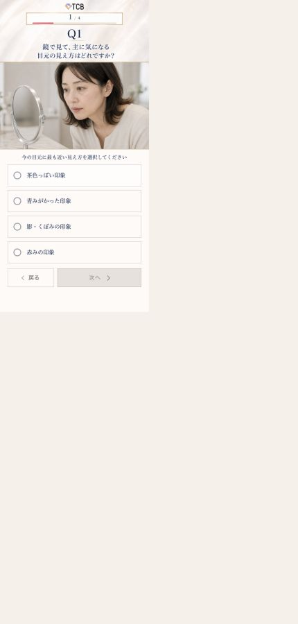
現行：女性が鏡を見る実写は悩み場面を示すが、茶・青・影・赤の差を画像から判断できない。
 元記事：大きな人物イラストの周囲に症状の拡大図を置き、選択肢の意味を画像で補完する。
元記事：大きな人物イラストの周囲に症状の拡大図を置き、選択肢の意味を画像で補完する。
変更内容
Q1〜Q5の人物画像は、同一人物・同一テイストの女性イラストへ統一する。画像は雰囲気づくりだけに使わず、設問で何を比較し、どれを選ぶかを助ける情報として設計する。
画像生成の共通条件
- 女性は20〜40代が自己投影しやすい、若すぎず老けすぎない印象にする。
- 肌色、光源、顔の角度、目元の倍率を揃え、クマ以外の差を減らす。
- 症状の拡大円は背景と同化させず、細い色枠または影で境界を明示する。
- 症状は誇張しすぎず、スマートフォン幅でも識別できる強さにする。
- 「画像はイメージです」を残す。医療診断に見える断定表現は避ける。
- 全設問で髪型、服、線画、色温度を統一し、途中で別記事へ移った印象を与えない。
改修後Q2：茶クマ・青クマ・黒クマ・複合クマを画像で選ばせる
現行Q1：「茶色っぽい印象」「青みがかった印象」「影・くぼみの印象」「赤みの印象」を文字で選ぶ。
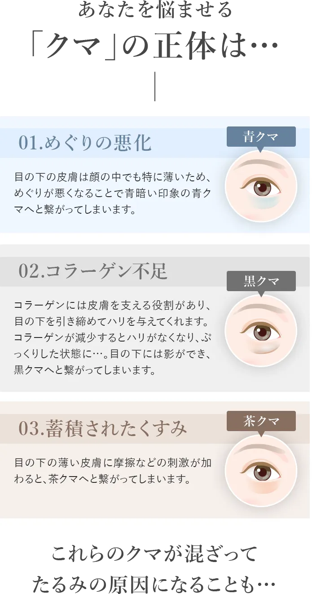
公式LPで確認できた表現：蓄積されたくすみ→茶クマ、めぐりの悪化→青クマ、コラーゲン不足→黒クマ。複合クマはこの画像では確認できない。
確定する質問と回答
改修指示質問：「鏡で見て、いちばん近いクマは？」
- 茶クマ：茶色っぽいくすみが気になる
- 青クマ：青み・紫っぽい色味が気になる
- 黒クマ：影・くぼみ・ふくらみが気になる
- 複合クマ：色味と影が重なって見える
イラスト構図
大きな女性の顔を中央に置き、その周囲に4つの目元拡大図を配置する。各拡大図は「茶クマ」「青クマ」「黒クマ」「複合クマ」のラベルと線で目元へ接続する。文字を読まなくても違いが分かり、文字を読めば判断を確定できる二重構造にする。
医療監修が必要「茶クマ・青クマ・黒クマ」の名称と3つの原因表現は公式LPで確認した。「複合クマ」「たるみが気になる複合クマ」は青木さんの制作指示であり、今回確認した公式画像の掲載表現ではない。公開前に公式表現または医療監修へ照合する。
改修後Q3：Q2で選んだクマ種類を、専用質問で深掘りする
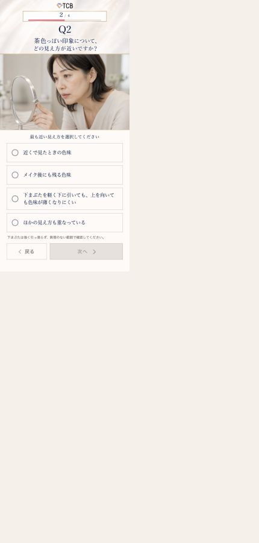
現行：茶色っぽい印象を選択した後のQ2。
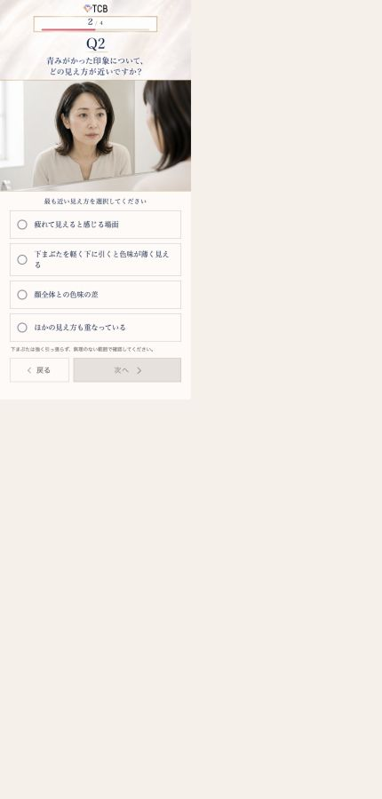
現行：青みがかった印象を選択した後のQ2。
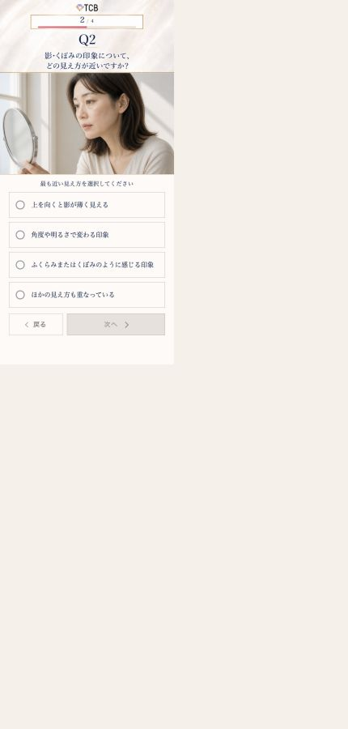
現行：影・くぼみの印象を選択した後のQ2。
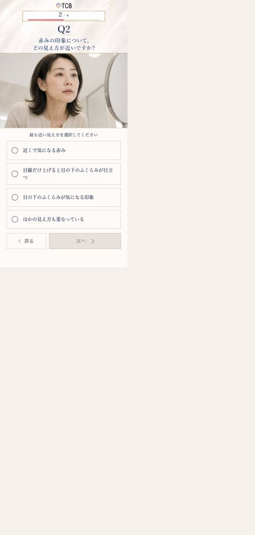
現行：赤みの印象を選択した後のQ2。
横展開できている点
LP上の事実現行記事はQ1の回答ごとにQ2の質問と4択を切り替えている。16経路を実際に操作した結果、Q1は結果カテゴリ、Q2は結果本文を変えた。元記事の「症状を選ぶ→その症状だけを深掘る」という個別化の核は維持されている。
変更する点
- Q2「茶クマ」を選んだ人には、色味・メイク後・下まぶたを軽く引いた時など、茶クマの見え方を深掘りする。
- Q2「青クマ」を選んだ人には、疲れて見える場面・下まぶたを軽く引いた時・顔全体との色差などを深掘りする。
- Q2「黒クマ」を選んだ人には、上を向いた時・角度や明るさ・ふくらみやくぼみなどを深掘りする。
- Q2「複合クマ」を選んだ人には、色味と影の両方、角度で変わる見え方、複数の症状が重なる場面を深掘りする。現行「赤み」の4択をそのまま流用しない。
複合クマ用4択の制作案
- 色味と影の両方が気になる
- 角度や明るさで色と影の見え方が変わる
- 目の下のふくらみと、くすみが重なって見える
- 日によって複数の見え方が重なる
上記4択は改修案であり、医療分類の確定文言ではない。公式LPと医療監修に合わせて最終調整する。
回答UX
改修指示選択肢を押した後に「次へ」を押させない。選択状態を色・枠・チェックで200〜400ms表示し、その後自動進行する。「戻る」はQ2以降の画面下に小さなテキストリンクとして置き、次へと同じ面積のボタンにしない。
改修後Q4：これまで試したケアを聞き、自己流対策の現在地を整理する
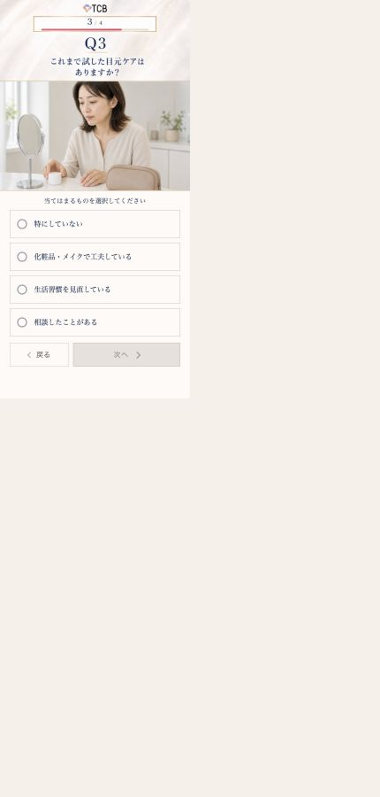
現行Q3：特にしていない／化粧品・メイク／生活習慣／相談経験を聞く。
→
 元記事：対策用品をイラストで見せ、「特にしていない」も含めて全員を先へ進める。
元記事：対策用品をイラストで見せ、「特にしていない」も含めて全員を先へ進める。
残す内容
現行Q3の質問意図と4択はクマ商材へ翻訳できているため、改修後Q4として残す。回答は「特にしていない」「化粧品・メイクで工夫している」「生活習慣を見直している」「相談したことがある」を基本にする。
変える内容
実写女性を、化粧品、コンシーラー、睡眠・生活習慣、クリニック相談を一画面で識別できるイラストへ変更する。回答対象を一目で理解させるため、イラスト内に4つの対策を小物または小さな場面で配置する。
心理上の役割
制作者の仮説症状を深掘りした直後に過去ケアを聞くことで、「すでに工夫しているのに気になる」「何をすればよいか分からず何もしていない」という現在地を本人に選ばせる。どちらの読者も回答不能にしないため、「特にしていない」を必ず残す。
改修後Q5：「知りたいこと」から「クマが消えた後の生活」へ変える
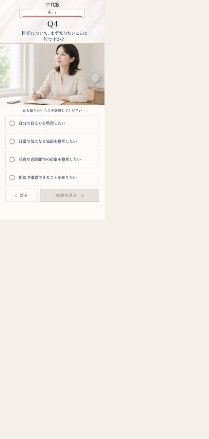
現行Q4：自分の見え方、日常で気になる瞬間、写真や近距離、相談で確認できることから「最も知りたいこと」を選ばせる。
→
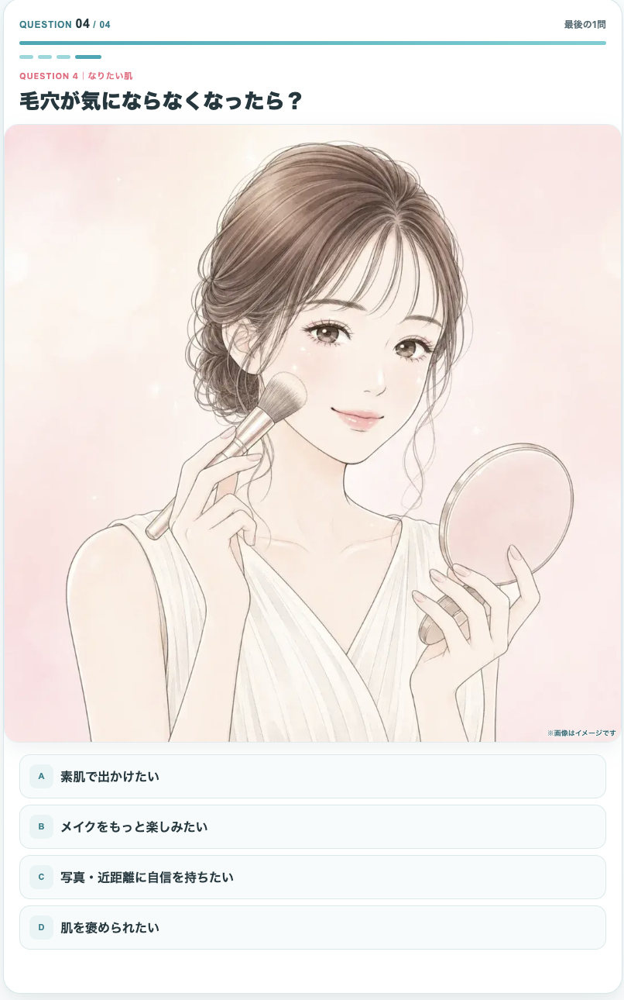
元記事：毛穴が気にならなくなった後の生活を選ばせ、悩み中心の感情を希望へ切り替える。
確定する質問と4択
必須変更質問：「クマが気にならなくなったら？」
- 朝のメイクを楽にしたい
- 若々しい印象を取り戻したい
- 自分の顔に自信を持ちたい
- お出かけを楽しみたい
変更理由
現行Q4は「何を知りたいか」を聞くため、相談CTAとの論理接続は作れる。しかし、回答内容が情報整理に留まり、クマが解決した後に何を得たいかを想像させない。元記事は最後の問いで、素肌、メイク、写真、自信、他者評価という生活ベネフィットを選ばせ、読者の感情を悩みから希望へ上げてから結果画面へ送っている。
今回の4択は、参考記事「★030_TCB-クマ再生注射女性_0円_臼倉_綺麗めフリップアンケ_20260519」で使われたベネフィットを軸にする。診断の最後は商品知識を聞く場所ではなく、「解決したら何が変わるか」を本人に選ばせる場所として設計する。
イラスト制作指示
一人の女性がメイクしているだけの画像にしない。4分割または中央人物＋4つの小場面で、朝の時短メイク、若々しい表情、鏡や写真に自信を持つ姿、外出を楽しむ姿を対応づける。各場面と選択肢の意味が一致し、画像だけでも理想像の違いを理解できる状態にする。
ローディング：待ち時間を「個別結果を作っている時間」に変える
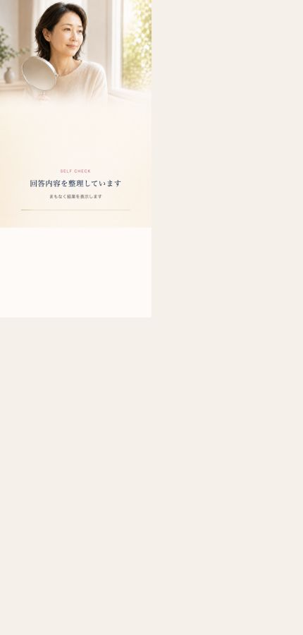
現行：「回答内容を整理しています」「まもなく結果を表示します」。全経路で共通表示。
残す理由
LP上の事実現行記事は回答後にローディングを挟む。即時に固定結果を出すより、入力内容を処理している印象を作り、「自分の回答に基づく結果」への期待を高める機能を持つ。
改修内容
「回答内容を整理しています」に加え、「5つの回答から、あなたに近いクマ傾向を整理しています」と表示する。1〜2秒程度で結果へ進め、待たせすぎない。医学的診断をしていると誤認させる「診断中」「原因を特定中」は使わない。
結果：4つの固有タイプ名へ変え、Q3回答と相談理由をつなぐ
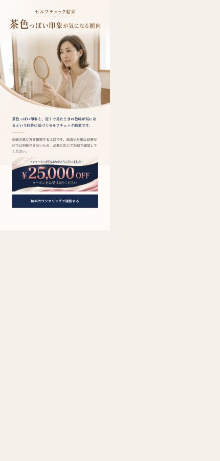
現行：茶色っぽい印象が気になる傾向。
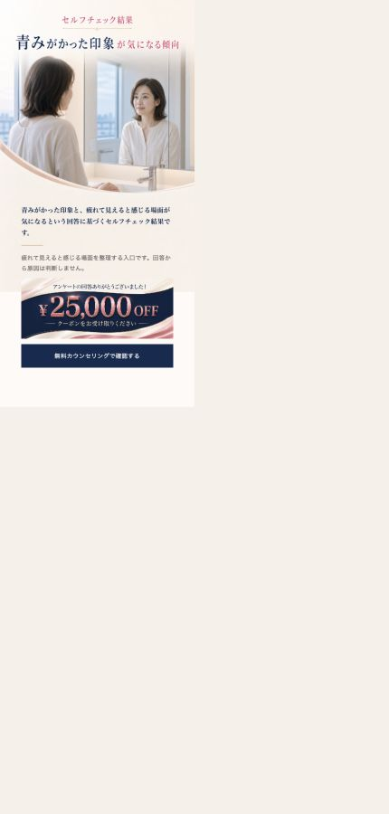
現行：青みがかった印象が気になる傾向。
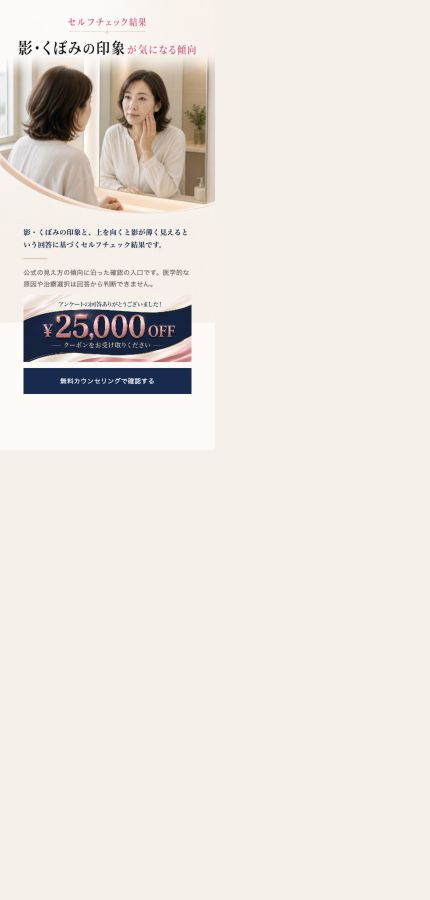
現行：影・くぼみの印象が気になる傾向。
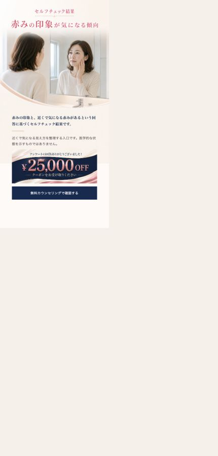
現行：赤みの印象が気になる傾向。
確定する結果名
| Q2で選んだタイプ | 改修後の結果見出し | 根拠の扱い |
|---|
| 茶クマ | くすみがたまった茶クマ傾向かも | 公式LPに「蓄積されたくすみ→茶クマ」の掲載を確認。 |
| 青クマ | めぐりが悪化した青クマ傾向かも | 公式LPに「めぐりの悪化→青クマ」の掲載を確認。 |
| 黒クマ | コラーゲン不足の黒クマ傾向かも | 公式LPに「コラーゲン不足→黒クマ」の掲載を確認。 |
| 複合クマ | たるみが気になる複合クマ傾向かも | 青木さんの制作指示。今回確認した公式画像では未確認。監修対象。 |
結果画面の順序
- 「あなたは」＋固有タイプ名
- タイプに対応した目元拡大イラスト
- Q3で選んだ見え方を反映した1〜2文
- 「Webセルフチェックで分かるのはここまで」
- 同じように見えるクマでも原因は一つではなく、肌・脂肪・骨格など実際の状態確認が必要であること
- 相談では目元の状態と選択肢を確認できること
- オファー条件
- CTA「無料カウンセリングで目元の状態を確認する」
表現上の注意見出しは「傾向かも」で止め、原因を確定診断しない。特に年代を回答ロジックへ入れても、年齢だけを理由にクマ原因を断定しない。結果本文はQ3回答を反映するが、「回答したから治療適応がある」と読める文章にしない。
オファーの整合
LP上の事実現行FVは「0円〜」、結果画面は「25,000円OFF」を提示する。両者の適用関係は結果画面内で説明されていない。
改修指示0円が何を指すか、25,000円OFFと併用・適用される条件は何かを、FVまたは結果CTA直前で一文にまとめる。条件を確認できない段階では、制作AIが独自に条件を補完しない。